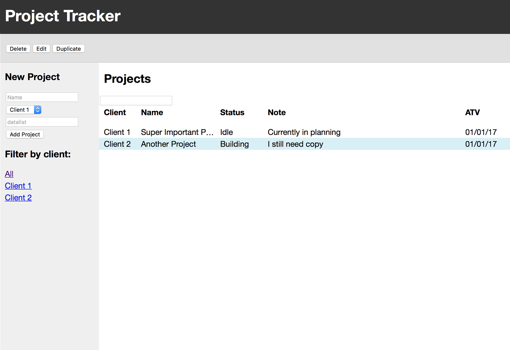
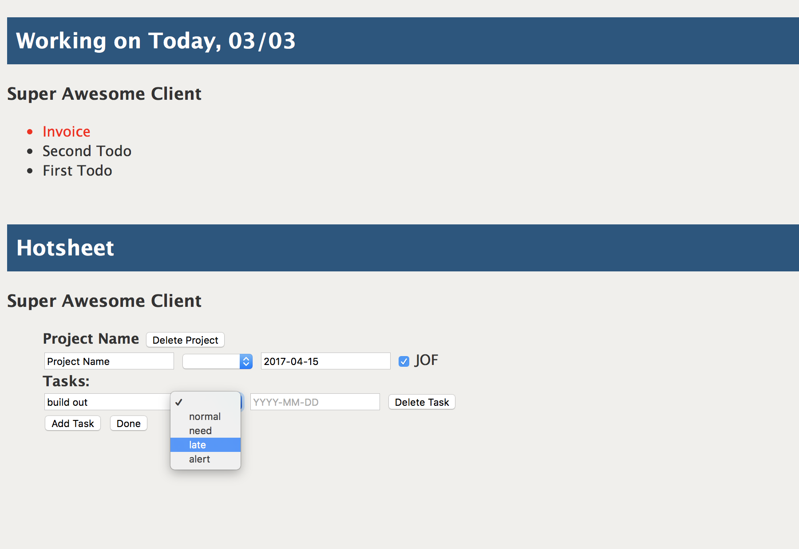
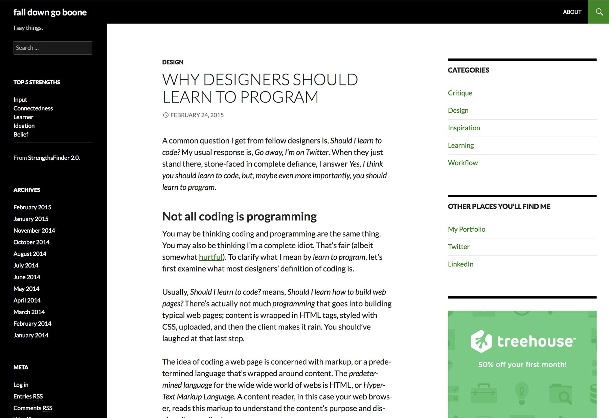

Hello. I'm Ryan.
I am a Fort Worth-based designer and developer in search of opportunities to grow and do meaningful work. I am currently obesessed with all things JavaScript, stupid trivia, complexity theory, and Stranger Things.
Experience
-
November 2006–Present
Senior designer — Inprov, LLC Southlake, TX
- Graphic and interaction design for print and digital materials
- Build and maintain the company website
- Develop one-off promotional web pages, including custom web forms and PHP/JavaScript development
- Design and develop promotional HTML email
- Web development consulting
-
October 2015–Present
Owner/Freelance Web Developer and Designer — Fort Worth, TX
- Built a custom website for an upscale salon in Mansfield, TX
- Interviewed the customer and established business needs and solutions
- Executed the solution by creating a custom WordPress theme complete with WooCommerce, Google Maps, and other various service API integrations
Side Projects
-

Lists App
A React/Redux client-based project tracking app intended for management use to track the progress of several designers department wide
Project Goals
- Gain basic UX experience by interviewing potential users and testing possible solutions
- Establish a firm foundation in React
- Understand the philosophy of the Redux version of Flow
- Create a web-based app through a holistic design and development approach
Current Status
- Still in development/early real-world use
- Initial app API is complete
- Currently designing and developing UI
What I've Learned So Far
Throughout this project I've been able to become more acquainted with test-driven development using Mocha and the Expect library, particularly the difficulties of knowing what to test for and how to maintain tests over the build process. I've also become more comfortable with Webpack, React, and Redux.
Outside of programming and workflow experience, I've also discovered the complexities of API design. APIs need to be easy to understand yet powerful enough to allow developers to scale. I look forward to growing in the area of software architecture design.
-

Job Tracker
A personal project tracker and to-do list built in Angular 1.x and PHP.
Project Goals
- Create a project that depends on a common JavaScript framework
- Create a useful, web-based replacement to handwritten to-do lists
- Eliminate repetitive, hand-typed daily emails to management
Current Status
In real-world, daily use.
What I Learned
This was the first big JavaScript project I had ever undertaken that was not a guided tutorial. Perhaps Angular 1.x was not a good starting place, but I learned how little I understood about JavaScript, as well as how difficult building just a simple framework-based web app really was. I learned about the tradeoffs made between custom code and off-the-shelf solutions. This project served as the basis for future JavaScript study.
-

fall down go boone
Personal blog.
Project Goals
- Learn to communicate ideas efficiently and effectively
- Establish an online presence
- Have a personal sandbox in which to play
Current Status
- Currently inactive
- I eventually plan to redesign and move from Wordpress to a static site generator
What I learned
I appreciate the opportunity to share ideas, but I felt in the end that all I was doing was repeating information that someone else said better elsewhere. I have since thought about using this space as a way to communicate some of the discoveries I've had while transitioning from a designer to a developer. I'm still exploring a content strategy. And there's always Medium!
Education
-
CS50 (HarvardX)
Active
Winter–Summer 2015
Subjects Studied
- Programming fundamentals
- C
- Complexity Theory (Asymptotic Notation)
- Arrays
- Algorithms
- Memory (Stack and Heap)
- Data Structures
- HTTP
- JavaScript
Achievements
- 100% grade on all projects submitted
- Certified passing completion
Project Work
-
Treehouse
Active
June 2013–June 2016
Subjects Studied
- Web Design
- Web Development
- Ruby on Rails
- PHP
Achievements
- 341 Badges
- 26,500 Points Earned